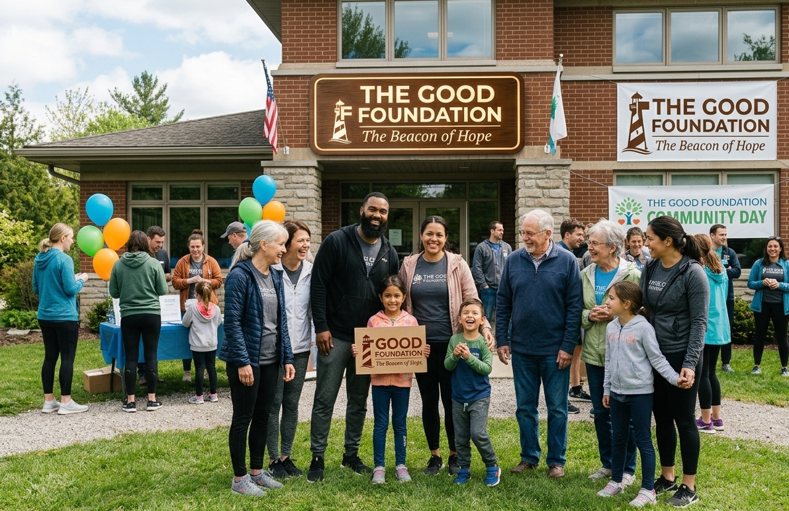

About Us

Our Story
The Good Foundation, dubbed 'The Beacon of Hope', was born in the suburbs of Louis Trichardt and founded by Dr Penniel M. His love and compassion for the less fortunate, vulnerable and needy was the reason all hands came together in the community to partake in this great initiative.
Get In Touch
We would love to hear from you!
Phone
015 975 1500
Ring us anytime!
Address
45 Risski Str, LTT, 0920
Pop by our offices!